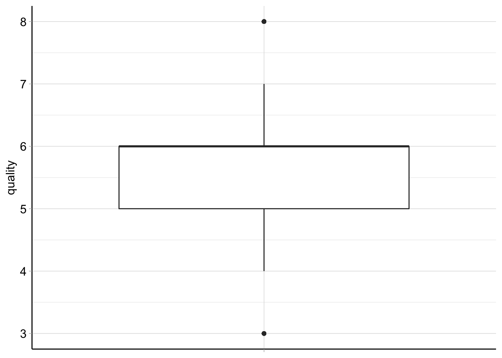
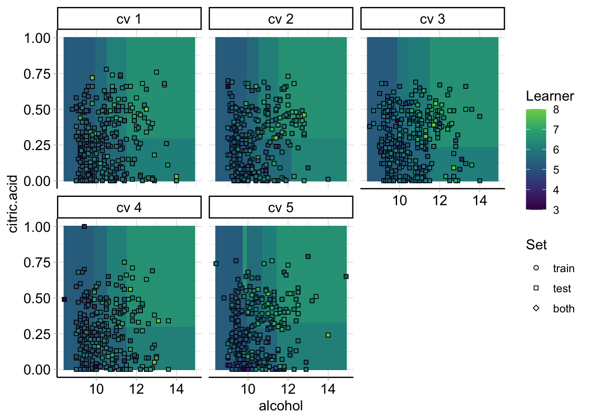
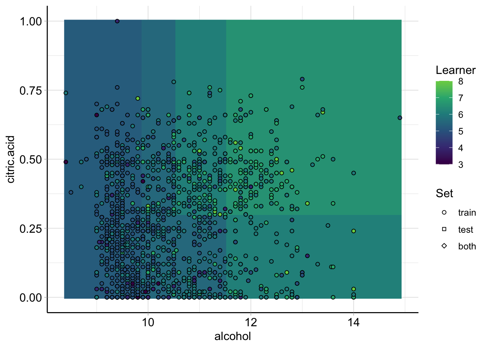

Chapter 5 Sample for Regression Problems
Here we will perform and solve a classification problem using the mlr3 package.
First, we load the data and create a machine learning task.
library(mlr3)
my_data =read.csv("./winequality-red.csv", sep = ";")
head(my_data)## fixed.acidity volatile.acidity citric.acid residual.sugar chlorides
## 1 7.4 0.70 0.00 1.9 0.076
## 2 7.8 0.88 0.00 2.6 0.098
## 3 7.8 0.76 0.04 2.3 0.092
## 4 11.2 0.28 0.56 1.9 0.075
## 5 7.4 0.70 0.00 1.9 0.076
## 6 7.4 0.66 0.00 1.8 0.075
## free.sulfur.dioxide total.sulfur.dioxide density pH sulphates alcohol
## 1 11 34 0.9978 3.51 0.56 9.4
## 2 25 67 0.9968 3.20 0.68 9.8
## 3 15 54 0.9970 3.26 0.65 9.8
## 4 17 60 0.9980 3.16 0.58 9.8
## 5 11 34 0.9978 3.51 0.56 9.4
## 6 13 40 0.9978 3.51 0.56 9.4
## quality
## 1 5
## 2 5
## 3 5
## 4 6
## 5 5
## 6 5We create a machine learning task:
my_task = as_task_regr(x = my_data, target = "quality")
my_task## <TaskRegr:my_data> (1599 x 12)
## * Target: quality
## * Properties: -
## * Features (11):
## - dbl (11): alcohol, chlorides, citric.acid, density, fixed.acidity,
## free.sulfur.dioxide, pH, residual.sugar, sulphates,
## total.sulfur.dioxide, volatile.acidityNext we choose a learner to perform a regression task:
learner = mlr_learners$get("regr.rpart")
learner## <LearnerRegrRpart:regr.rpart>: Regression Tree
## * Model: -
## * Parameters: xval=0
## * Packages: mlr3, rpart
## * Predict Types: [response]
## * Feature Types: logical, integer, numeric, factor, ordered
## * Properties: importance, missings, selected_features, weightsSince we have 1599 observations, we will split them into test/train using 2:8.
train_set = sample(my_task$nrow, 0.8 * my_task$nrow)
test_set = setdiff(seq_len(my_task$nrow), train_set)We train the model using the test set:
learner$train(my_task, row_ids = train_set)
learner$model## n= 1279
##
## node), split, n, deviance, yval
## * denotes terminal node
##
## 1) root 1279 863.813900 5.630962
## 2) alcohol< 11.55 1081 608.105500 5.488437
## 4) volatile.acidity>=0.385 871 407.628000 5.363949
## 8) sulphates< 0.555 268 102.667900 5.093284
## 16) volatile.acidity>=0.8025 46 33.739130 4.695652 *
## 17) volatile.acidity< 0.8025 222 60.148650 5.175676 *
## 9) sulphates>=0.555 603 276.600300 5.484245
## 18) alcohol< 9.975 294 106.843500 5.292517 *
## 19) alcohol>=9.975 309 148.666700 5.666667
## 38) total.sulfur.dioxide< 14.5 29 21.862070 5.068966
## 76) sulphates< 0.625 15 7.733333 4.533333 *
## 77) sulphates>=0.625 14 5.214286 5.642857 *
## 39) total.sulfur.dioxide>=14.5 280 115.371400 5.728571
## 78) total.sulfur.dioxide>=76 31 7.419355 5.225806 *
## 79) total.sulfur.dioxide< 76 249 99.140560 5.791165 *
## 5) volatile.acidity< 0.385 210 130.995200 6.004762
## 10) sulphates< 0.645 69 25.072460 5.550725 *
## 11) sulphates>=0.645 141 84.737590 6.226950
## 22) alcohol< 9.75 29 14.551720 5.655172 *
## 23) alcohol>=9.75 112 58.250000 6.375000
## 46) pH>=3.255 58 22.568970 6.086207 *
## 47) pH< 3.255 54 25.648150 6.685185 *
## 3) alcohol>=11.55 198 113.863600 6.409091
## 6) sulphates< 0.615 72 34.875000 5.958333 *
## 7) sulphates>=0.615 126 56.000000 6.666667 *We then predict using the test set:
prediction = learner$predict(my_task, row_ids = test_set)
prediction$score()## regr.mse
## 0.4051785We can select the best feature set by using mlr3fselect package and use the auto tuner:
library(mlr3fselect)
# auto tuner
autos = auto_fselector(
method = "random_search",
learner = lrn("regr.rpart"),
resampling = rsmp("cv"),
measure = msr("regr.mse"),
term_evals = 10,
batch_size = 5
)
autos$train(my_task, row_ids = train_set)## INFO [03:56:35.515] [bbotk] Starting to optimize 11 parameter(s) with '<FSelectorRandomSearch>' and '<TerminatorEvals> [n_evals=10, k=0]'
## INFO [03:56:35.516] [bbotk] Evaluating 5 configuration(s)
## INFO [03:56:35.692] [mlr3] Running benchmark with 50 resampling iterations
## INFO [03:56:35.695] [mlr3] Applying learner 'select.regr.rpart' on task 'my_data' (iter 1/10)
## INFO [03:56:35.736] [mlr3] Applying learner 'select.regr.rpart' on task 'my_data' (iter 2/10)
## INFO [03:56:35.771] [mlr3] Applying learner 'select.regr.rpart' on task 'my_data' (iter 3/10)
## INFO [03:56:35.805] [mlr3] Applying learner 'select.regr.rpart' on task 'my_data' (iter 4/10)
## INFO [03:56:35.838] [mlr3] Applying learner 'select.regr.rpart' on task 'my_data' (iter 5/10)
## INFO [03:56:35.873] [mlr3] Applying learner 'select.regr.rpart' on task 'my_data' (iter 6/10)
## INFO [03:56:35.908] [mlr3] Applying learner 'select.regr.rpart' on task 'my_data' (iter 7/10)
## INFO [03:56:35.948] [mlr3] Applying learner 'select.regr.rpart' on task 'my_data' (iter 8/10)
## INFO [03:56:35.982] [mlr3] Applying learner 'select.regr.rpart' on task 'my_data' (iter 9/10)
## INFO [03:56:36.017] [mlr3] Applying learner 'select.regr.rpart' on task 'my_data' (iter 10/10)
## INFO [03:56:36.220] [mlr3] Applying learner 'select.regr.rpart' on task 'my_data' (iter 1/10)
## INFO [03:56:36.257] [mlr3] Applying learner 'select.regr.rpart' on task 'my_data' (iter 2/10)
## INFO [03:56:36.291] [mlr3] Applying learner 'select.regr.rpart' on task 'my_data' (iter 3/10)
## INFO [03:56:36.326] [mlr3] Applying learner 'select.regr.rpart' on task 'my_data' (iter 4/10)
## INFO [03:56:36.359] [mlr3] Applying learner 'select.regr.rpart' on task 'my_data' (iter 5/10)
## INFO [03:56:36.392] [mlr3] Applying learner 'select.regr.rpart' on task 'my_data' (iter 6/10)
## INFO [03:56:36.430] [mlr3] Applying learner 'select.regr.rpart' on task 'my_data' (iter 7/10)
## INFO [03:56:36.464] [mlr3] Applying learner 'select.regr.rpart' on task 'my_data' (iter 8/10)
## INFO [03:56:36.497] [mlr3] Applying learner 'select.regr.rpart' on task 'my_data' (iter 9/10)
## INFO [03:56:36.530] [mlr3] Applying learner 'select.regr.rpart' on task 'my_data' (iter 10/10)
## INFO [03:56:36.562] [mlr3] Applying learner 'select.regr.rpart' on task 'my_data' (iter 1/10)
## INFO [03:56:36.598] [mlr3] Applying learner 'select.regr.rpart' on task 'my_data' (iter 2/10)
## INFO [03:56:36.634] [mlr3] Applying learner 'select.regr.rpart' on task 'my_data' (iter 3/10)
## INFO [03:56:36.675] [mlr3] Applying learner 'select.regr.rpart' on task 'my_data' (iter 4/10)
## INFO [03:56:36.710] [mlr3] Applying learner 'select.regr.rpart' on task 'my_data' (iter 5/10)
## INFO [03:56:36.745] [mlr3] Applying learner 'select.regr.rpart' on task 'my_data' (iter 6/10)
## INFO [03:56:36.780] [mlr3] Applying learner 'select.regr.rpart' on task 'my_data' (iter 7/10)
## INFO [03:56:36.815] [mlr3] Applying learner 'select.regr.rpart' on task 'my_data' (iter 8/10)
## INFO [03:56:36.850] [mlr3] Applying learner 'select.regr.rpart' on task 'my_data' (iter 9/10)
## INFO [03:56:36.890] [mlr3] Applying learner 'select.regr.rpart' on task 'my_data' (iter 10/10)
## INFO [03:56:36.925] [mlr3] Applying learner 'select.regr.rpart' on task 'my_data' (iter 1/10)
## INFO [03:56:36.958] [mlr3] Applying learner 'select.regr.rpart' on task 'my_data' (iter 2/10)
## INFO [03:56:36.991] [mlr3] Applying learner 'select.regr.rpart' on task 'my_data' (iter 3/10)
## INFO [03:56:37.024] [mlr3] Applying learner 'select.regr.rpart' on task 'my_data' (iter 4/10)
## INFO [03:56:37.058] [mlr3] Applying learner 'select.regr.rpart' on task 'my_data' (iter 5/10)
## INFO [03:56:37.096] [mlr3] Applying learner 'select.regr.rpart' on task 'my_data' (iter 6/10)
## INFO [03:56:37.130] [mlr3] Applying learner 'select.regr.rpart' on task 'my_data' (iter 7/10)
## INFO [03:56:37.164] [mlr3] Applying learner 'select.regr.rpart' on task 'my_data' (iter 8/10)
## INFO [03:56:37.197] [mlr3] Applying learner 'select.regr.rpart' on task 'my_data' (iter 9/10)
## INFO [03:56:37.231] [mlr3] Applying learner 'select.regr.rpart' on task 'my_data' (iter 10/10)
## INFO [03:56:37.265] [mlr3] Applying learner 'select.regr.rpart' on task 'my_data' (iter 1/10)
## INFO [03:56:37.306] [mlr3] Applying learner 'select.regr.rpart' on task 'my_data' (iter 2/10)
## INFO [03:56:37.341] [mlr3] Applying learner 'select.regr.rpart' on task 'my_data' (iter 3/10)
## INFO [03:56:37.376] [mlr3] Applying learner 'select.regr.rpart' on task 'my_data' (iter 4/10)
## INFO [03:56:37.412] [mlr3] Applying learner 'select.regr.rpart' on task 'my_data' (iter 5/10)
## INFO [03:56:37.448] [mlr3] Applying learner 'select.regr.rpart' on task 'my_data' (iter 6/10)
## INFO [03:56:37.483] [mlr3] Applying learner 'select.regr.rpart' on task 'my_data' (iter 7/10)
## INFO [03:56:37.523] [mlr3] Applying learner 'select.regr.rpart' on task 'my_data' (iter 8/10)
## INFO [03:56:37.558] [mlr3] Applying learner 'select.regr.rpart' on task 'my_data' (iter 9/10)
## INFO [03:56:37.595] [mlr3] Applying learner 'select.regr.rpart' on task 'my_data' (iter 10/10)
## INFO [03:56:37.636] [mlr3] Finished benchmark
## INFO [03:56:38.115] [bbotk] Result of batch 1:
## INFO [03:56:38.116] [bbotk] alcohol chlorides citric.acid density fixed.acidity free.sulfur.dioxide pH
## INFO [03:56:38.116] [bbotk] FALSE FALSE FALSE TRUE FALSE TRUE FALSE
## INFO [03:56:38.116] [bbotk] FALSE FALSE FALSE FALSE FALSE TRUE TRUE
## INFO [03:56:38.116] [bbotk] TRUE TRUE TRUE TRUE FALSE TRUE TRUE
## INFO [03:56:38.116] [bbotk] TRUE FALSE FALSE FALSE FALSE FALSE FALSE
## INFO [03:56:38.116] [bbotk] TRUE TRUE TRUE TRUE TRUE TRUE FALSE
## INFO [03:56:38.116] [bbotk] residual.sugar sulphates total.sulfur.dioxide volatile.acidity regr.mse
## INFO [03:56:38.116] [bbotk] TRUE FALSE FALSE FALSE 0.6531754
## INFO [03:56:38.116] [bbotk] FALSE FALSE FALSE FALSE 0.6781009
## INFO [03:56:38.116] [bbotk] TRUE TRUE TRUE TRUE 0.4767217
## INFO [03:56:38.116] [bbotk] FALSE FALSE FALSE TRUE 0.4867314
## INFO [03:56:38.116] [bbotk] TRUE TRUE FALSE TRUE 0.4701894
## INFO [03:56:38.116] [bbotk] runtime_learners uhash
## INFO [03:56:38.116] [bbotk] 0.461 db075d73-4253-4eec-8c5c-b8155702704e
## INFO [03:56:38.116] [bbotk] 0.286 eedffa8e-197c-4b14-8256-bca529f96837
## INFO [03:56:38.116] [bbotk] 0.304 f9e1f3fe-d89f-4a89-91e5-57bcba68cdf6
## INFO [03:56:38.116] [bbotk] 0.279 b616ad04-e9f7-4101-b8e7-2caef079fcf4
## INFO [03:56:38.116] [bbotk] 0.306 05f16753-e6ed-4f99-9c11-61c68ad1949b
## INFO [03:56:38.117] [bbotk] Evaluating 5 configuration(s)
## INFO [03:56:38.265] [mlr3] Running benchmark with 50 resampling iterations
## INFO [03:56:38.269] [mlr3] Applying learner 'select.regr.rpart' on task 'my_data' (iter 1/10)
## INFO [03:56:38.306] [mlr3] Applying learner 'select.regr.rpart' on task 'my_data' (iter 2/10)
## INFO [03:56:38.342] [mlr3] Applying learner 'select.regr.rpart' on task 'my_data' (iter 3/10)
## INFO [03:56:38.385] [mlr3] Applying learner 'select.regr.rpart' on task 'my_data' (iter 4/10)
## INFO [03:56:38.421] [mlr3] Applying learner 'select.regr.rpart' on task 'my_data' (iter 5/10)
## INFO [03:56:38.457] [mlr3] Applying learner 'select.regr.rpart' on task 'my_data' (iter 6/10)
## INFO [03:56:38.492] [mlr3] Applying learner 'select.regr.rpart' on task 'my_data' (iter 7/10)
## INFO [03:56:38.528] [mlr3] Applying learner 'select.regr.rpart' on task 'my_data' (iter 8/10)
## INFO [03:56:38.564] [mlr3] Applying learner 'select.regr.rpart' on task 'my_data' (iter 9/10)
## INFO [03:56:38.606] [mlr3] Applying learner 'select.regr.rpart' on task 'my_data' (iter 10/10)
## INFO [03:56:38.642] [mlr3] Applying learner 'select.regr.rpart' on task 'my_data' (iter 1/10)
## INFO [03:56:38.676] [mlr3] Applying learner 'select.regr.rpart' on task 'my_data' (iter 2/10)
## INFO [03:56:38.710] [mlr3] Applying learner 'select.regr.rpart' on task 'my_data' (iter 3/10)
## INFO [03:56:38.745] [mlr3] Applying learner 'select.regr.rpart' on task 'my_data' (iter 4/10)
## INFO [03:56:38.779] [mlr3] Applying learner 'select.regr.rpart' on task 'my_data' (iter 5/10)
## INFO [03:56:38.821] [mlr3] Applying learner 'select.regr.rpart' on task 'my_data' (iter 6/10)
## INFO [03:56:38.856] [mlr3] Applying learner 'select.regr.rpart' on task 'my_data' (iter 7/10)
## INFO [03:56:38.890] [mlr3] Applying learner 'select.regr.rpart' on task 'my_data' (iter 8/10)
## INFO [03:56:38.925] [mlr3] Applying learner 'select.regr.rpart' on task 'my_data' (iter 9/10)
## INFO [03:56:38.959] [mlr3] Applying learner 'select.regr.rpart' on task 'my_data' (iter 10/10)
## INFO [03:56:38.994] [mlr3] Applying learner 'select.regr.rpart' on task 'my_data' (iter 1/10)
## INFO [03:56:39.034] [mlr3] Applying learner 'select.regr.rpart' on task 'my_data' (iter 2/10)
## INFO [03:56:39.070] [mlr3] Applying learner 'select.regr.rpart' on task 'my_data' (iter 3/10)
## INFO [03:56:39.103] [mlr3] Applying learner 'select.regr.rpart' on task 'my_data' (iter 4/10)
## INFO [03:56:39.137] [mlr3] Applying learner 'select.regr.rpart' on task 'my_data' (iter 5/10)
## INFO [03:56:39.171] [mlr3] Applying learner 'select.regr.rpart' on task 'my_data' (iter 6/10)
## INFO [03:56:39.205] [mlr3] Applying learner 'select.regr.rpart' on task 'my_data' (iter 7/10)
## INFO [03:56:39.246] [mlr3] Applying learner 'select.regr.rpart' on task 'my_data' (iter 8/10)
## INFO [03:56:39.280] [mlr3] Applying learner 'select.regr.rpart' on task 'my_data' (iter 9/10)
## INFO [03:56:39.313] [mlr3] Applying learner 'select.regr.rpart' on task 'my_data' (iter 10/10)
## INFO [03:56:39.347] [mlr3] Applying learner 'select.regr.rpart' on task 'my_data' (iter 1/10)
## INFO [03:56:39.381] [mlr3] Applying learner 'select.regr.rpart' on task 'my_data' (iter 2/10)
## INFO [03:56:39.416] [mlr3] Applying learner 'select.regr.rpart' on task 'my_data' (iter 3/10)
## INFO [03:56:39.457] [mlr3] Applying learner 'select.regr.rpart' on task 'my_data' (iter 4/10)
## INFO [03:56:39.491] [mlr3] Applying learner 'select.regr.rpart' on task 'my_data' (iter 5/10)
## INFO [03:56:39.526] [mlr3] Applying learner 'select.regr.rpart' on task 'my_data' (iter 6/10)
## INFO [03:56:39.561] [mlr3] Applying learner 'select.regr.rpart' on task 'my_data' (iter 7/10)
## INFO [03:56:39.598] [mlr3] Applying learner 'select.regr.rpart' on task 'my_data' (iter 8/10)
## INFO [03:56:39.633] [mlr3] Applying learner 'select.regr.rpart' on task 'my_data' (iter 9/10)
## INFO [03:56:39.674] [mlr3] Applying learner 'select.regr.rpart' on task 'my_data' (iter 10/10)
## INFO [03:56:39.709] [mlr3] Applying learner 'select.regr.rpart' on task 'my_data' (iter 1/10)
## INFO [03:56:39.743] [mlr3] Applying learner 'select.regr.rpart' on task 'my_data' (iter 2/10)
## INFO [03:56:39.778] [mlr3] Applying learner 'select.regr.rpart' on task 'my_data' (iter 3/10)
## INFO [03:56:39.813] [mlr3] Applying learner 'select.regr.rpart' on task 'my_data' (iter 4/10)
## INFO [03:56:39.856] [mlr3] Applying learner 'select.regr.rpart' on task 'my_data' (iter 5/10)
## INFO [03:56:39.894] [mlr3] Applying learner 'select.regr.rpart' on task 'my_data' (iter 6/10)
## INFO [03:56:39.929] [mlr3] Applying learner 'select.regr.rpart' on task 'my_data' (iter 7/10)
## INFO [03:56:39.964] [mlr3] Applying learner 'select.regr.rpart' on task 'my_data' (iter 8/10)
## INFO [03:56:39.998] [mlr3] Applying learner 'select.regr.rpart' on task 'my_data' (iter 9/10)
## INFO [03:56:40.033] [mlr3] Applying learner 'select.regr.rpart' on task 'my_data' (iter 10/10)
## INFO [03:56:40.082] [mlr3] Finished benchmark
## INFO [03:56:40.547] [bbotk] Result of batch 2:
## INFO [03:56:40.549] [bbotk] alcohol chlorides citric.acid density fixed.acidity free.sulfur.dioxide pH
## INFO [03:56:40.549] [bbotk] TRUE TRUE TRUE TRUE TRUE TRUE TRUE
## INFO [03:56:40.549] [bbotk] FALSE TRUE TRUE TRUE FALSE TRUE FALSE
## INFO [03:56:40.549] [bbotk] TRUE TRUE FALSE FALSE TRUE FALSE FALSE
## INFO [03:56:40.549] [bbotk] TRUE TRUE TRUE FALSE TRUE TRUE FALSE
## INFO [03:56:40.549] [bbotk] FALSE TRUE TRUE TRUE TRUE TRUE FALSE
## INFO [03:56:40.549] [bbotk] residual.sugar sulphates total.sulfur.dioxide volatile.acidity regr.mse
## INFO [03:56:40.549] [bbotk] TRUE TRUE TRUE TRUE 0.4767217
## INFO [03:56:40.549] [bbotk] FALSE FALSE FALSE TRUE 0.5665966
## INFO [03:56:40.549] [bbotk] FALSE FALSE FALSE FALSE 0.5307512
## INFO [03:56:40.549] [bbotk] TRUE FALSE TRUE FALSE 0.5012905
## INFO [03:56:40.549] [bbotk] FALSE TRUE FALSE TRUE 0.5563537
## INFO [03:56:40.549] [bbotk] runtime_learners uhash
## INFO [03:56:40.549] [bbotk] 0.316 cc627ef9-13d7-4533-bbe2-ae47a2ebb917
## INFO [03:56:40.549] [bbotk] 0.292 62bf355a-3934-4275-aaa7-db20348937b6
## INFO [03:56:40.549] [bbotk] 0.291 cabd7a96-4446-467a-99f7-9dade5addd51
## INFO [03:56:40.549] [bbotk] 0.304 710f28bd-591f-4e11-b9fa-a17e26ad5f44
## INFO [03:56:40.549] [bbotk] 0.299 8a3d540a-5414-4f1a-88de-f0463ffa3781
## INFO [03:56:40.551] [bbotk] Finished optimizing after 10 evaluation(s)
## INFO [03:56:40.552] [bbotk] Result:
## INFO [03:56:40.552] [bbotk] alcohol chlorides citric.acid density fixed.acidity free.sulfur.dioxide pH
## INFO [03:56:40.552] [bbotk] TRUE TRUE TRUE TRUE TRUE TRUE FALSE
## INFO [03:56:40.552] [bbotk] residual.sugar sulphates total.sulfur.dioxide volatile.acidity
## INFO [03:56:40.552] [bbotk] TRUE TRUE FALSE TRUE
## INFO [03:56:40.552] [bbotk] features
## INFO [03:56:40.552] [bbotk] alcohol,chlorides,citric.acid,density,fixed.acidity,free.sulfur.dioxide,...
## INFO [03:56:40.552] [bbotk] regr.mse
## INFO [03:56:40.552] [bbotk] 0.4701894Here we can see that the regr.mse increases after performing feature selection, that means it does not get better.
5.1 Visualization
We will use mlr3viz to create some visualizations.

Autoplot is the default plot for my task. Here it shows a boxplot for the red wine quality. We can see that the interquartile range is between 5-6 and the median is at 5.5. We also view that there are outliers.
The resample result prediction plot and the prediction plot can only compare one or two features:
## INFO [03:56:40.719] [mlr3] Applying learner 'regr.rpart' on task 'my_data' (iter 1/5)
## INFO [03:56:40.728] [mlr3] Applying learner 'regr.rpart' on task 'my_data' (iter 2/5)
## INFO [03:56:40.742] [mlr3] Applying learner 'regr.rpart' on task 'my_data' (iter 3/5)
## INFO [03:56:40.753] [mlr3] Applying learner 'regr.rpart' on task 'my_data' (iter 4/5)
## INFO [03:56:40.763] [mlr3] Applying learner 'regr.rpart' on task 'my_data' (iter 5/5)
## INFO [03:56:41.521] [mlr3] Applying learner 'regr.rpart' on task 'my_data' (iter 1/1)